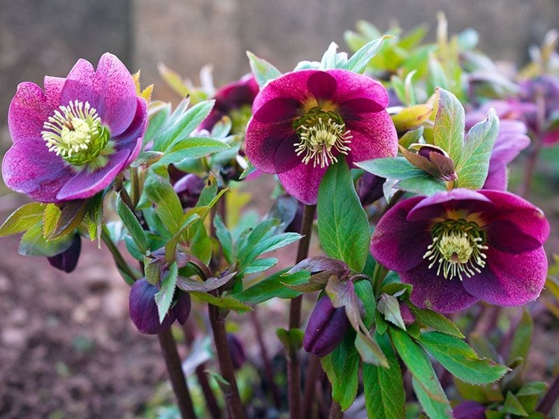
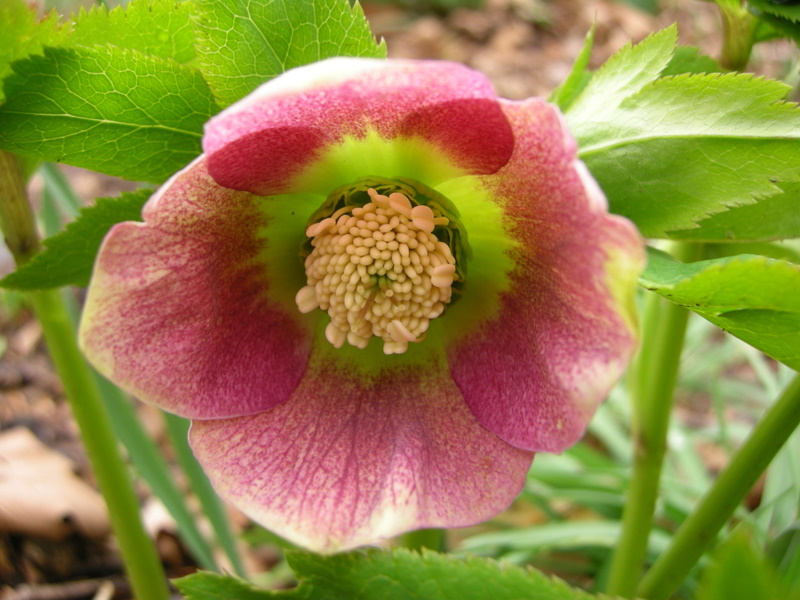
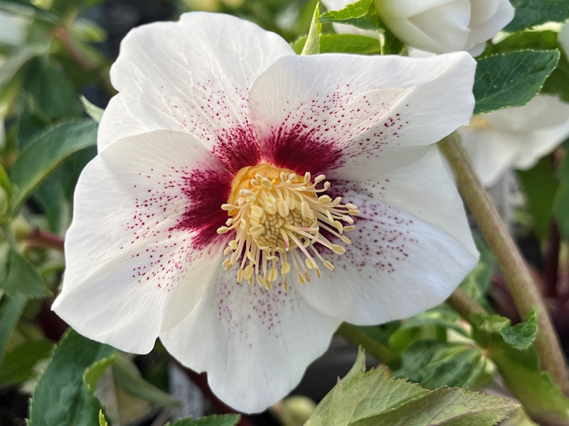
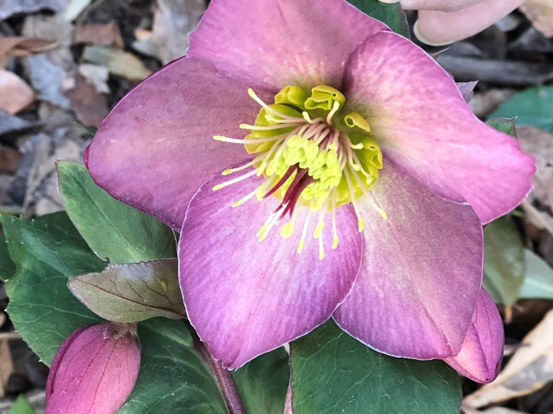

Meaning: We shall overcome scandal and slander
Origin
Despite its reputation as a poisonous plant, hellebore has been used for medicinal purposes. In Greek myth, the healer Melampus is said to have cured madness by administering hellebore, and herbalists throughout ancient times and into the Middle Ages used hellebore to treat various ailments. The curious plant, which bloomed at the very end of winter, just before spring, was thought to have magical powers, and was at times associated with witchcraft.
Gallery



